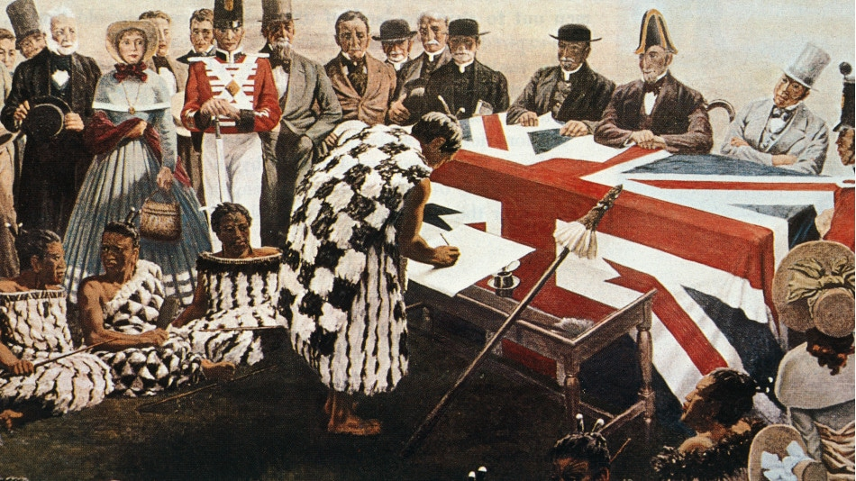

Here is a quick summary of the Treaty Of Waitangi; The Treaty of Waitangi is an agreement between the British Crown and Māori chiefs that was signed on February 6, 1840 at Waitangi, in the Bay of Islands. The Treaty is considered New Zealand’s founding document. It was written in Māori and English, but the two versions had different meanings and interpretations. The Treaty aimed to protect Māori rights and sovereignty, while allowing British settlement and governance.
